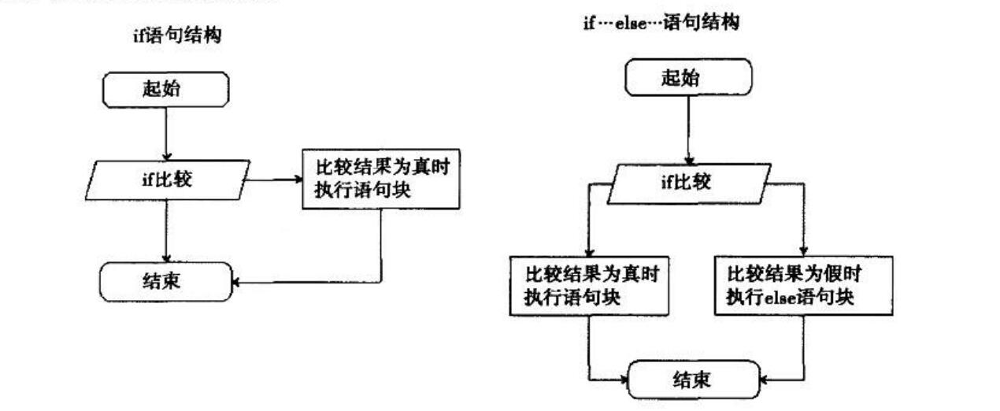
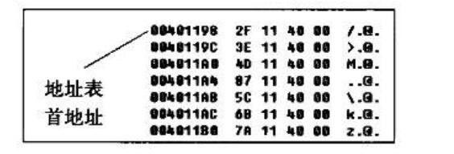
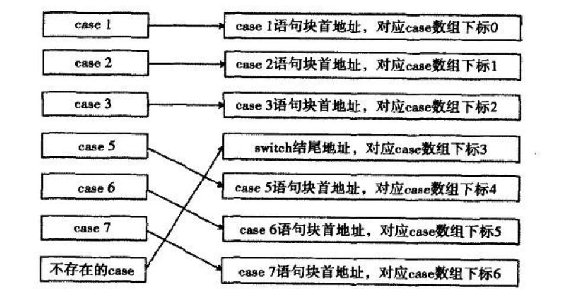
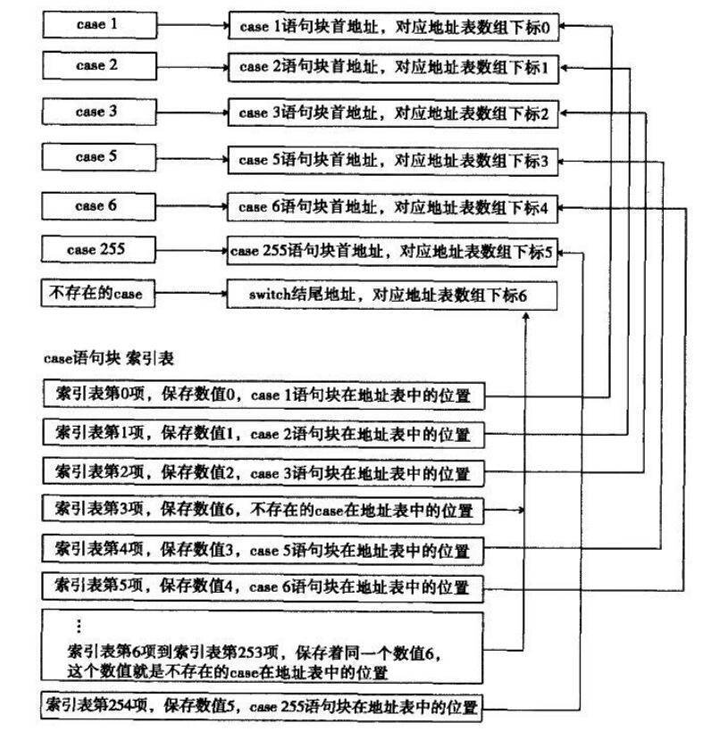

记录一下《C++反汇编与逆向分析技术》(三)
流程控制语句的识别
if语句
if 语句只能判断两种情况:“0”为假值，“非0”为真值。如果为真值，则进人语句块内执行语句;如果为假值，则跳过if语句块，继续运行程序的其他语句。要注意的是，if语句转换的条件跳转指令与if语句的判断结果是相反的
1 | //C++源码说明：if语句结构组成 |
出现这种情况是因为汇编语言的条件跳转是满足某条件则跳转，绕过某些代码块，这一点是与C语言相反的，而C语言编译器不将else语句块提到if语句块前面是因为C语言是根据代码行的位置来决定编译后的二进制代码的地址高低的，也就是说，低行数对应低地址，高行数对应高地址
根据这一特性，如果将if语句中的比较条件 “argc==0” 修改为 “if(argc > 0)”，则其对应的汇编语言所使用的条件跳转指令会是“小于等于0”
1 | //C++源码说明: if语句大于0比较 |
在分析过程中，表达式短路(上一篇blog的内容)和if语句这两种分支结构的实现结构都是一样的，蛮难区分的
总结：
1 | ；先执行各类影响标志位的指令 |
如果遇上以上指令序列，大概率是一个if语句组成的单分支结构
if···else···语句
if和if···else···的流程对比

1 | //C++源码说明: if else |
将上述代码稍作改动，改为符合条件表达式转换方式1的形式，如
1 | //C++源码说明，if...else..模拟条件表达式转换方式 |
还是挺简单的，总结一下
1 | 总结结构： |
这两个跳转指令就是辨识的关键，不过和条件表达式差不多，所以反推的时候看个人习惯
上面那份代码是debug版，下面给个O2优化的：
1 | arg_0 = dword ptr 4 |
可以看到优化了很多，做了一个流水线优化，还是蛮难还原回去的
用if构成的多分支流程
多分支结构就是if···else if···else if···else···这种结构，直接看代码吧，这是debug版
1 | //C++源码说明，多分支结构 |
debug版的代码看着还是舒适，就是一个很简单的cmp+跳转指令，来个总结
1 | 总结： |
在编译期间，永远不可抵达的分支将被优化掉而不参与编译处理，在写代码的时候，可以在每个else if的代码块里加个return，这样就可以减少分支比较。
看一下开启O2优化的代码：
1 | .text:00401000 sub_401000 proc near ; CODE XREF: _main+5p |
有内味了，看来现在的出题人都喜欢开O2优化
switch的真相
看一下3条case语句的switch跳转：
1 | switch (nIndex} { //源码对比 |
可以看到与if···else差距还是挺大的，if···else是跳转后跟着语句块，而switch结构则将所有的条件跳转都放在了一起。这样就实现了C语法的要求，在case语句块中没有break语句时，可以顺续执行后续case语句块
总结：
1 | mov reg, mem ;取出switch中考察的变量 |
这是switch分支数小于4的情况下，VC++ 6.0采用的策略，当分支数大于3时，并且case的判定值存在明显线性关系组合时，switch的优化特性便可以凸显出来，如代码所示：
1 | //C++示例代码 |
这里将case语句块的首地址保存在一个数组中，并且数组下标以0为起始，在进入switch后会先进行一次比较，检查输入的值是否大于case的最大值。case地址数组如下：

如果每两个case值之间的差值小于等于6，并且case语句数大于等于4,编译器中就会形成这种线性结构。在编写代码的过程中无需有序排列case值，编译器会在编译过程中对case线性地址表进行排序，如case的顺序为3、2、1、 4、5，在case线性地址表中，会将它们的语句块的首地址进行排序，将case 1语句块的首地址放在case线性地址表的第0项上,case 2语句块首地址放在表中第1项，以此类推，将首地址变为一个有序的表格进行存放，如图

给出release版：
1 | ;取出switch语句的参数值并放入ecx中 |
总结：
1 | mov reg,mem ;取变量 |
当遇到这样的代码块时，可获取某一变量的信息并对其进行范围检查，如果超过case的最大值，则跳转条件成立，跳转目标指明了switch语句块的末尾或者是default块的首地址。条件跳转后紧跟jmp指令，并且是相对比例因子寻址方式，且基址为地址表的首地址，说明此处是线性关系的switch分支结构
难以构成跳转表的switch
对于两个case值间隔较大时，编译器用索引表来优化，索引表优化需要两张表：一张为case语句块地址表，另一张为case语句块索引表。
地址表中的每一项保存一个case语句块的首地址，有几个case语句块就有几项。default语句块也在其中，如果没有则保存一个switch结束地址。这个结束地址在地址表中只会保存一份，不会像有序线性地址表那样，重复保存switch的结束地址。
索引表中保存地址表的编号，它的大小等于最大case值和最小case值的差。当差值大于255时，这种优化方案也会浪费空间，可通过树方式优化，这里就只讨论差值小于或等于255的情况。表中的每- -项为- 一个字节大小，保存的数据为case语句块地址表中的索引编号。
首先将所有case语句块的首地址保存在-一个地址表中，地址表中的表项个数会根据程序中case分支来决定。有多少个case分支，地址表就会有多少项。索引表，中保存了地址表中的下标值。索引表中最多可以存储256项，每- -项的大小为 1字节，这决定了case值不可以超过1字节的最大表示范围(0~255)， 因此索引表也只能存储256项索引编号。

具体的参考这个blog吧，写的很好
do/while/for的比较
do循环是向上跳转例如：
1 | DO_BEGIN |
while循环是先进行判断，向下跳转，到单次循环结束时，向上跳转，例如
1 | WHILE_BEGIN: |
for循环由赋初值、设置循环条件、设置循环步长这三条语句组成
for循环比较复杂，看一下代码：
1 | //C++源码说明:for循环完成整数累加和 |
以上，可以看到代码分为四个部分，总结一下就是：
1 | mov mem/ reg, xxx ;賦初值 |
这种结构是for循环独有的，在计数器变量被赋初值后，利用jmp跳过第一次步长计算。然后，可以通过三个跳转指令还原for循环的各个组成部分:第一个jmp指令之前的代码为初始化部分;从第一个jmp指令到循环条件比较处( 也就是上面代码中FOR_ _CMP 标号的位置)之间的代码为步长计算部分;在条件跳转指令jxx之后寻找一个jmp指令，这jmp指令必须是向上跳转的，且其目标是到步长计算的位置，在jxx和这个jmp(也就是上面代码中省略号所在的位置)之间的代码即为循环语句块。
编译器对循环结构的优化
while和for循环在O2优化中，都会被优化成do的形式，而结构被优化后，细节上还能被再次优化
代码外提
1
2
3
4
5
6
7
8
9
10
11
12
13
14
15
16
17
18
19
20
21
22
23
24
25
26
27
28
29
30
31
32
33
34
35
36
37
38
39
40
41
42
43
44//C++源码说明:for循环完成整数累加和
int CodePick (int nCount) {
int nSum = 0;
int nIndex = 0;
do {
nSum += nIndex;
nIndex++ ;
//此处代码每次都要判断nCount一1, nCount并没有自减，仍然为一个固定值
//可在循环体外先对nCount进行减等于1操作，再进入循环体
} while (nIndex < nCount - 1) ;
return nSum;
}
//经过优化后的反汇编代码
. text : 00401000 sub_ 401000 proc near; CODE XREF:_ main+21↑p
. text :00401000 arg_ 0 = dword ptr 4
;荻取参数到edx中
. text : 00401000 mov edx，[esp+arg_0]
. text : 00401004 xor eax,eax
. text : 00401006 xor ecx,ecx
;代码外提，对edx执行自减1操作
. text : 00401008 dec edx
;进入循环体，在循环体内直接对保存参数的edx进行比较，没有任何减1操作
. text : 00401009 loc 401009: : CODE XREF: sub_ 401000+E↑j
. text : 00401009 add eax, ecx
. text : 0040100B inc ecx
. text : 0040100C cmp ecx,edx
. text : 0040100E jl short loc_401009
. text : 00401010 retn
. text : 00401010 sub_401000 endp
也就是被优化成了
int CodePick (int nCount) {
int nSum = 0;
int nIndex = 0;
nCount -= 1;
do {
nSum += nIndex;
nIndex++ ;
//此处代码每次都要判断nCount一1, nCount并没有自减，仍然为一个固定值
//可在循环体外先对nCount进行减等于1操作，再进入循环体
} while (nIndex < nCount) ;
return nSum;
}2.强度削弱
1 | // C++源码说明:强度削弱 |
函数工作原理
栈帧的形成和关闭
当栈顶指针esp小于栈底指针ebp时，就形成了栈帧
栈平衡：
不同的两次函数调用，所形成的栈帧也不相同。当由一个函数进入到另一个函数中时，就会针对调用的函数开辟出其所需的栈空间，形成此函数的栈帧。当这个函数结束调用时，需要清除掉它所使用的栈空间，关闭栈帧，我们把这一过程称为栈平衡。
给一个小demo：
1 | // C++源码说明:一个空函数 |
各种调用方式
由于函数自身无法对不定参数执行平衡操作，所以有了函数的调用约定：
- _cdecl : CIC++默认的调用方式，调用方平衡栈，不定参数的函数可以使用。
- _stdcall : 被调方平衡栈，不定参数的函数无法使用。
- _fastcall : 寄存器方式传参，被调方平衡栈，不定参数的函数无法使用。
_cdecl 与 _stdcall 的对比，debug版
1 | // C++源码说明:_cdecl、_stdcall 两种调用方式的区别 |
虽然区别明显，但是不能当作区分依据，因为汇编语言可能会在其他地方平衡栈~
在O2优化下，_cdecl会采取复写传播优化，将每次参数平衡的操作进行归并，一次性平衡栈顶指针esp。
_cdecl 调用方式的函数在同一作用域内多次使用， 会在效率上比 _stdcal l 高一点，这是因为 __cdecl 可以使用复写传播，而 _ stdcall 都在函数内平衡参数，无法使用复写传播这种优化方式。在这三种调用方式中， _ fastcall 调用方式的效率最高，其他两种调用方式都是通过栈传递参数，唯独 _ fastcall 可以利用寄存器传递参数。但由于寄存器数目很少，而参数相比可以很多，只能量力而行，故 _fastcall 调用方式只使用了ecx和edx,分别传递第-一个参数和第二个参数，其余参数传递则转换成栈传参方式。
来份_fastcall代码康康~：
1 | // C++源码说明:_fastcall调用方式 |
使用ebp或esp寻址
由于局部变量使用栈空间进行存储，因此进入函数后的第一件事就是开辟函数中局部变量所需的栈空间大小，变量随着进入函数体开始生命，函数执行的时候结束
在大多数情况下，使用ebp寻址局部变量只能在非O2选项中产生，这样做是为了方便调试和检测栈平衡，使目标代码可读性更高。而在O2编译选项中，只要栈顶是稳定的，就可以不再使用ebp, 利用esp直接访问局部变量，可以节省一个寄存器资源。来个小demo
1 | // C++源码说明:通过esp访问局部变量 |
每次访问变量都需要计算，如果在函数执行过程中esp发生了改变，再次访问变量就需要重新计算偏移。为了省去对偏移量的计算，方便分析，IDA在分析过程中事先将函数中的每个变量的偏移值计算出来，得出了一个固定偏移值，使用标号记录。这里有两个方案，正数标号法和负数标号法
正数标号法：以调整后的esp作为基址来计算局部变量的偏移值
1
2
3
4
5
6var_0 = 4 ;定义第一个变量偏移量，所在地址为0x0012FFEC
var_1 = 0 ;定义第二个变量偏移量，所在地址为0x0012FFE8
sub esp, 8 ;申请变量栈空间，esp保存地址变为0x0012FFE8
lea eax, [esp+var_0] ;寻址第一个变量地址为0x0012FFE8+4 = 0x0012FFEC
push eax ;执行push指令，esp被减4，esp地址变为0x0012FFE4
lea eax [esp+4+var_1] ;由于esp被减4，需要对基址esp进行加4,调整后再加上标号负数标号法：以调整前的esp作为基址来计算局部变量的偏移值
1
2
3
4
5
6
7
8var_0 = -4 ;定义第一个变量偏移量，所在地址为0X0012FFEC
var_1 = -8 ;定义第二个变量偏移量，所在地址为0x0012FFE8
sub esp,8 ;申请变量栈空间，esp 保存地址变为0x0012FFE8
;使用申请变量栈空间前的esp作为基扯，就需要调整esp,将其加8
lea eax, [esp+8+var_0]
push eax ;执行push指令，esp被减4，esp地址变为0x0012FFE4
;由于esp被减4，需要对基址esp进行二次调整，加8后再加4，因此得到数值0x0C
lea eax [esp+0Ch+var_1]
显然ida选择了后者，下一节分析
函数的参数
参数也是函数中的一个变量，采用正数标号法来表示局部变量偏移标号时，函数的参数标号和局部变量的标号值都是正数，无法区分，不利于分析。如果使用负数标号法表示，则可以将两者区分，正数表示参数，而负数则表示局部变量，0值表示返回地址。
不放代码了，挺简单的
C\C++将不定长参数的函数定义为：
- 至少要有一个参数
- 所有不定长的参数类型传入时都是dword类型
- 需在某一个参数中描述参数总个数或将最后一个参数赋值为结尾标记
根据参数的传递特性，只要确定第一个参数的地址，对其地址值做加法，就可访问到此参数的下一个参数所在的地址。获取参数的类型是为了解释地址中的数据。.上面提到的第三点是为 了获取参数的个数，其目的是正确访问到最后一个参数的地址，以防止访问参数空间越界。
函数的返回值
call指令被执行后，该指令同时还会做另一件事：将下一条指令所在的地址压入栈中
ret指令读取栈中地址传送给EIP寄存器，使程序回到call的下一条指令
函数的返回值是由EAX寄存器来保存，但是只能保存四字节数据，大于四字节的需要使用其他方法保存，来个demo代码(DEBUG版)
1 | // C++源码说明 |
再来个结构体的
1 | // C++ 源码说明:结构体类型作为返回值 |
结构体只有两个成员，所以用了eax和edx来传递返回值